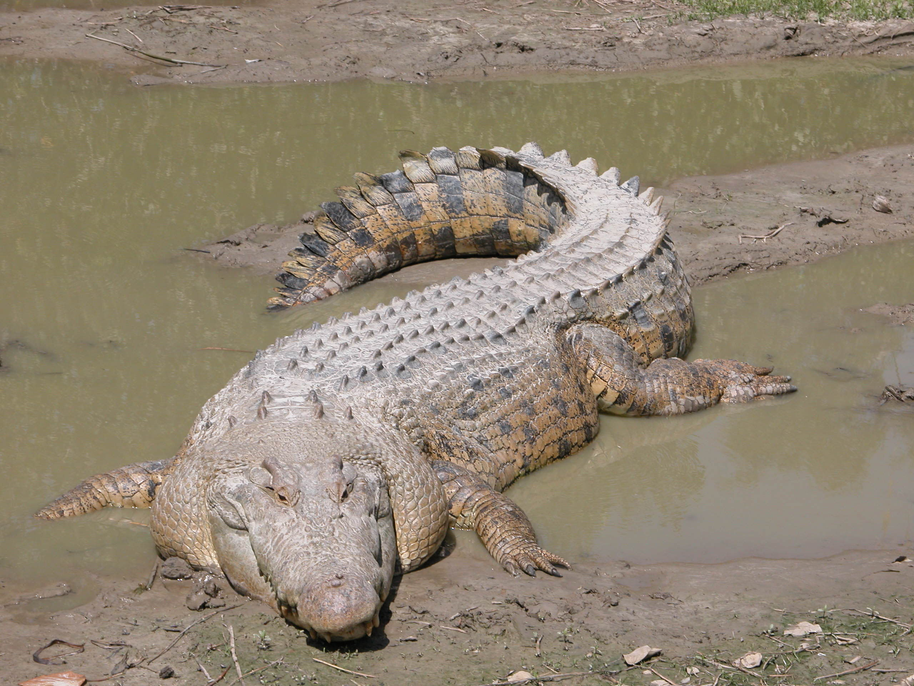

With 23 species of crocs there's only 2 families of crocodiles. Those are the Crocodylidae family and the Gavialidae family.
| Family | Species | Scientific name | Image |
|---|---|---|---|
| Crocodylidae | American Crocodile | C. acutus | |
| Crocodylidae | Borneo Crocodile | C. raninus | |
| Crocodylidae | Cuban Crocodile | C. rhombifer | |
| Crocodylidae | Freshwater Crocodile | C. johnstoni | |
| Crocodylidae | Hall's New Guinea Crocodile | C. halli | |
| Crocodylidae | Morelet's Crocodile | C. moreletii | |
| Crocodylidae | Mugger Crocodile | C. palustris | |
| Crocodylidae | New Guinea Crocodile | C. novaeguineae | |
| Crocodylidae | Nile Crocodile | C. niloticus | |
| Crocodylidae | Orinoco Crocodile | C. intermedius | |
| Crocodylidae | Philippine Crocodile | C. mindorensis | |
| Crocodylidae | Saltwater Crocodile | C. porosus |  |
| Crocodylidae | Siamese Crocodile | C. siamensis | |
| Crocodylidae | West African Crocodile | C. suchus | |
| Crocodylidae | Central African Slender-Snouted Crocodile | M. leptorhynchus | |
| Crocodylidae | West African Slender-Snouted Crocodile | M. cataphractus | |
| Crocodylidae | Dwarf Crocodile | O. tetraspis | |
| Gavialidae | Gharial | G. gangeticus | |
| Gavialidae | False Gharial | T. schlegelii |
Their respiratory system is quite impressive as it allows them to stay in water for as much as five hours at a time.
Crocodiles and alligators always get mixed up, but there's a way to tell them apart. Crocodiles have pointed V-shaped snouts and teeth that interlock externally. When their mouths are closed, you can see both rows of teeth.
The Gavialidae family looks different then traditional crocodiles though. They're larger then regular crocodiles, other than the saltwater croc. They have elongated, narrow snouts which help telling the difference.
Crocodiles prey on fish, birds, frogs, and crustaceans. Occasionally they'll even eat each other. Just like alligators they can't chew, so they will swallow prey whole. Although crocodiles don't prey on humans, the saltwater crocodiles and Nile crocodiles are in particular dangerous to humans and are known for eating humans. Crocodiles have a very slow metabolism, thanks to that, they can survive for as long as two years without anything. Even in extreme situations, crocodiles appear to be able to shut down and live off their own tissue for a long period of time.
Their natural habitat predominantly comprises freshwater sources, like rivers, lakes, and marshlands.
| Location | Species # |
|---|---|
| North America | 2 species |
| South America | 9-14 species |
| Europe | 0 species |
| Asia | 7 species |
| Africa | 7 species |
| Australia | 2 species |
| Antarctica | zero |
- Crocodiles do not sweat, they rather lie with their mouth wide open to cool off from the heat.
- Crocodiles seem to be more closely related to dinosaurs and Birds than their Reptile family.
- The first appearance of crocodiles on earth was about 240 million years ago.
- Crocodiles have a weak set of muscles around their mouth, such that whenever their mouth is held closed, they cannot open.
- The size of a crocodile's eggs is nearly the same as that of a Goose.
- Crocodiles gender is based off temperature.
- Crocs have a bite force of 5,000 PSI.
- A crocodile's lifespan is between 35-75 years
- They can swim up to 22mph.